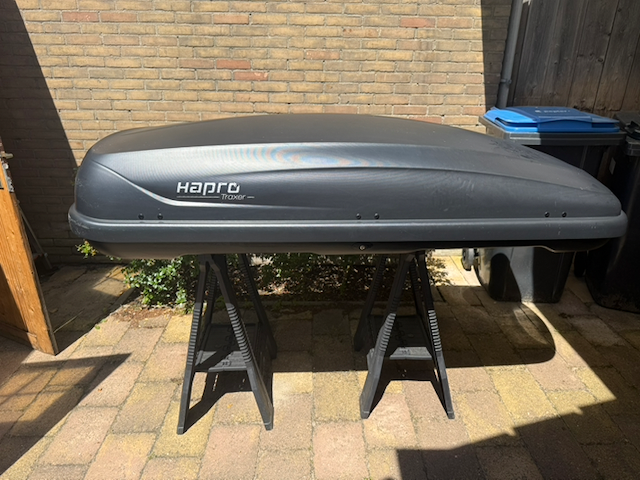
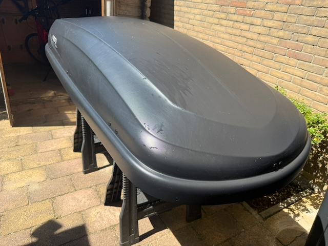
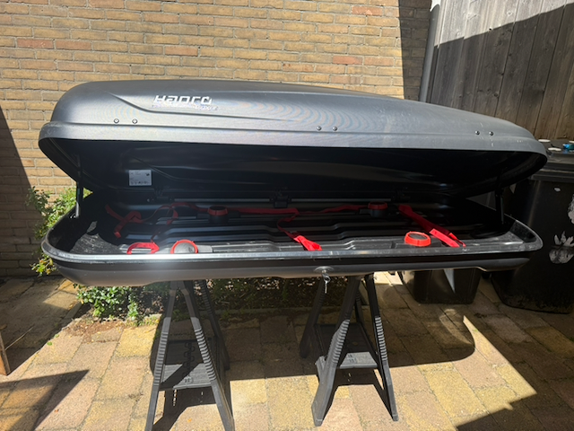
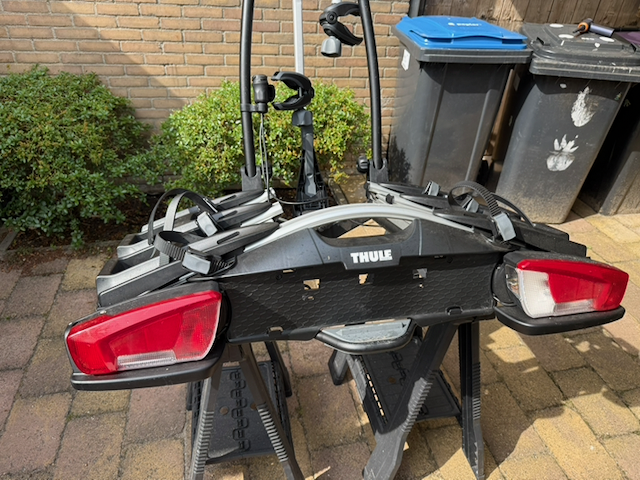
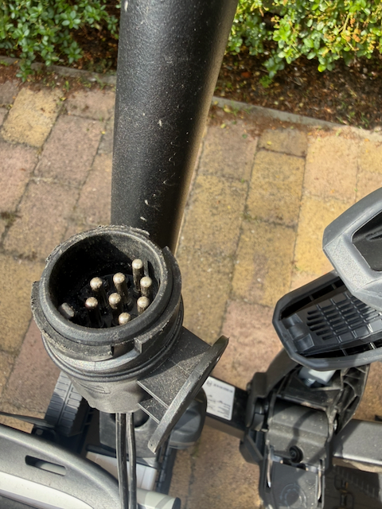

Extra ruimte of extra fietsen nodig voor je reis? Huur ze los of bespaar met de bundel.
Neem er een, of pak ze samen als bundel en bespaar.





Beschikbaarheid, tarieven en boeken van beide items verloopt via onze Gearhive-advertenties.